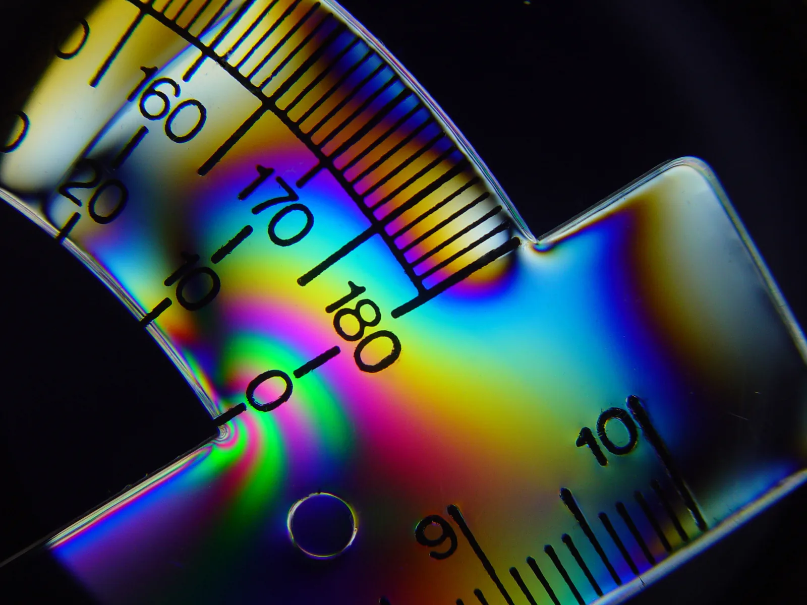

Polarisation of light
Why do polarised sunglasses remove the glare reflected from the surface of a lake, when ordinary sunglasses that are just as dark only dim everything?
Prior knowledge
- Light is an electromagnetic wave whose electric field oscillates perpendicular to the direction of travelchapter Electromagnetic radiation and the black-body spectrum
- Light is refracted at a boundary according to the law of refraction $n_1 \sin\alpha_1 = n_2 \sin\alpha_2$, and the angles are measured from the normalchapter Reflection and refraction of light
Core path: follow the steps in order. Besides calculations, the core path includes investigations, explanations and graphs. Tasks marked Optional give extra practice. Optional tasks: 9.
Think about it
On a sunny day the surface of a lake sparkles so brightly that it is hard to look into the water. An angler puts on polarised sunglasses, and the sparkle almost disappears: the stones and fish in the shallow water come into view. A friend's ordinary sunglasses are just as dark, but the sparkle can still be seen through them. If the angler tilts their head to the side, the sparkle returns.
What do polarised glasses do to light differently from ordinary dark glass?
Optional Recap: light as a wave
Predict
Make your predictions before investigating 3 questions
Prediction 1: one film
Prediction 2: the second film
Prediction 3: a third film in between
Investigate
The light of a lamp passes through two or three polarisers to a screen. Turn the films and follow how the direction of oscillation of the electric field and the intensity of the transmitted light change.
Simulation
How to use
Choose whether there are two or three polarisers, and set the transmission axis of each with a slider. The angles $\theta_1$, $\theta_2$ and $\theta_3$ are measured from the vertical. In the picture the polarisers are seen obliquely from the side: the hatching of the film and the dark line show the transmission axis. The brown wave is the electric field of the light, and its width shows the amplitude of the electric field. At the bottom, circles show the direction of oscillation seen along the ray after each stage, and below them is the intensity as a percentage of the intensity $I_0$ of the light of the lamp. The middle one, $\text{P}_2$, has an effect only when there are three polarisers.
Assumptions of the model
The light of the lamp is unpolarised. The polarisers are ideal: they let through all oscillation along the transmission axis and absorb all oscillation perpendicular to it. A real film lets through slightly less. The picture is not to scale, and the wavelength of the light has been drawn much larger than in reality. The brightness of the light spot on the screen is only an illustration. The readings are values calculated by the model, not measurements.
How the calculation works
The first polariser lets through half of the intensity of the unpolarised light:
$$I_1 = \tfrac{1}{2} I_0$$
Each following polariser obeys Malus's law $I = I_\text{prev} \cos^2\theta$, where $I_\text{prev}$ is the intensity of the previous stage and $\theta$ is the angle between the transmission axes of the previous and the present polariser. With three polarisers $I_2 = I_1 \cos^2(\theta_2 - \theta_1)$ and $I_3 = I_2 \cos^2(\theta_3 - \theta_2)$; with two, $I_3 = I_1 \cos^2(\theta_3 - \theta_1)$. The amplitude of the electric field is drawn proportional to the square root of the intensity, because the intensity is proportional to the square of the amplitude.
Experiment 1: the angle of the analyser
Test predictions 1 and 2. There are two polarisers, and the transmission axis of the first is vertical, $\theta_1 = 0^\circ$; change only the angle $\theta_3$ of the analyser. Record at least the angles $0^\circ$, $30^\circ$, $60^\circ$ and $90^\circ$, and if you like also $15^\circ$, $45^\circ$ and $75^\circ$. On every row compare the reading $I_3$ with the reading $I_1$.
Initial state: polarisers: two, polariser angle $\theta _1$ = $0^\circ$, middle angle $\theta _2$ = $45^\circ$, analyser angle $\theta _3$ = $0^\circ$. Kept constant: polarisers, polariser angle $\theta _1$. Varied: analyser angle $\theta _3$.
| analyser angle $\theta _3$ | $I_1$ $(\%)$ | $I_3$ $(\%)$ |
|---|
Experiment 2: a third film in between
Test prediction 3. There are three polarisers. The outer ones are crossed, $\theta_1 = 0^\circ$ and $\theta_3 = 90^\circ$; change only the angle $\theta_2$ of the middle one. Record at least the angles $0^\circ$, $30^\circ$, $45^\circ$, $60^\circ$ and $90^\circ$.
Initial state: polarisers: three, polariser angle $\theta _1$ = $0^\circ$, middle angle $\theta _2$ = $0^\circ$, analyser angle $\theta _3$ = $90^\circ$. Kept constant: polarisers, polariser angle $\theta _1$, analyser angle $\theta _3$. Varied: middle angle $\theta _2$.
| middle angle $\theta _2$ | $I_2$ $(\%)$ | $I_3$ $(\%)$ |
|---|
Measurement: a phone display and a polariser
Made-up example data
A group used a polarising film to investigate whether the light of a phone display is polarised. The display was white on a table, with a polarising film on a protractor on top of it and a Vernier light sensor on top of the film. The group turned the film in steps of $15^\circ$ and recorded the reading of the sensor, that is, the illuminance $E$. The angle $\theta$ is measured from the position at which the reading was largest. Besides the light of the display, light from the room also reached the sensor.
| $\theta$ (°) | $E$ (lx) |
|---|---|
| $0$ | $374$ |
| $15$ | $354$ |
| $30$ | $283$ |
| $45$ | $197$ |
| $60$ | $102$ |
| $75$ | $40$ |
| $90$ | $15$ |
Core
Conclusion: the angle between the films and the intensity
Write on the basis of your table: what share of the light of the lamp passes through the first film? How does the intensity passing through the analyser depend on the angle between the films? Does it decrease steadily with the angle?
Model answer
The first film always let through $I_1 = 50.0\,\%$ of the light of the lamp, because the light of the lamp is unpolarised. Through the analyser passed $50.0\,\%$ at $0^\circ$, $37.5\,\%$ at $30^\circ$, $12.5\,\%$ at $60^\circ$ and $0\,\%$ at $90^\circ$. When the transmission axes of the films were the same, all the light that had come through the first film also passed through the analyser, and when the films were crossed, no light came through at all. The intensity did not decrease steadily: over the first $30^\circ$ it fell by only a quarter, but over the last $30^\circ$ all the rest vanished. The values are calculated by the model.
Assess your own answer
Tick the points your own answer already contains.
Theory
Key idea
Light is a transverse wave
In the chapter Electromagnetic radiation and the black-body spectrum we saw that light is an electromagnetic wave: the electric field and the magnetic field oscillate perpendicular to each other and to the direction in which the wave travels. Light is therefore a transverse wave, like a wave on a rope (chapter How waves form and travel). In a transverse wave the direction of the oscillation matters. The direction in which the electric field oscillates is called the direction of polarisation of the light. In a longitudinal wave, such as sound, the medium oscillates along the direction of travel, and no other directions are left for the oscillation. That is why sound cannot be polarised. The fact that light can be polarised shows that light is a transverse wave.
Unpolarised and polarised light
The light of the Sun, of a candle and of an incandescent bulb is unpolarised. It is emitted by a huge number of atoms independently of one another, so the direction of oscillation of the electric field changes randomly and rapidly. On average, all directions perpendicular to the direction of travel are equally common. Light is linearly polarised when its electric field oscillates in the same direction all the time. Such light comes, for example, from many lasers and from computer screens. The eye cannot tell polarised light from unpolarised light, but a polariser can.
Polariser
A polariser is a film or filter that has a transmission axis. An ordinary polarising film contains long, parallel molecular chains that absorb an oscillation of the electric field along the chains. Light that oscillates perpendicular to the chains passes through, and this direction is the transmission axis of the film. Every incoming oscillation can be split into a component along the transmission axis and a component perpendicular to it. In unpolarised light all directions are equally common, so on average half of the intensity falls on each component. An ideal polariser therefore lets through half of the intensity of unpolarised light, $I_1 = \tfrac{1}{2} I_0$, whatever position the film is turned to. The light that comes through is polarised along the transmission axis. A real film lets through slightly less than half, because it also absorbs a little of the light along the transmission axis.
Two polarisers
When a second polariser is placed in the path of polarised light, it is called an analyser. If the transmission axis of the analyser is the same as the direction of polarisation of the light, all of the light passes through. As the analyser is turned, the intensity of the transmitted light decreases. When the transmission axes are perpendicular to each other, that is, when the polarisers are crossed, no light passes through ideal films at all. Two polarising films can therefore be used to find out whether light is polarised and in which direction: when the light is polarised, its brightness changes as the film is turned. The brightness of unpolarised light does not change as the film is turned. If a third film is placed at a slant between crossed polarisers, light passes through again, because after the middle film the light has a component along the transmission axis of the last film too.

Reflected light is partially polarised
When unpolarised light is reflected from the surface of an insulator, such as water, glass or wet asphalt, the oscillation parallel to the surface is reflected more strongly than the others. The reflected light is therefore partially polarised parallel to the surface. The glare reflected from a horizontal surface is thus polarised mostly in the horizontal direction. The degree of polarisation depends on the angle of incidence: at one particular angle, Brewster's angle, the reflected light is completely polarised. Light reflected from a metal surface is not polarised in the same way.
Polarised sunglasses
The lenses of polarised sunglasses contain a polarising film whose transmission axis is vertical. The film absorbs the horizontal oscillation of the glare reflected from the surface of a lake or a road, so the glare is dimmed a great deal. Unpolarised light coming from elsewhere is dimmed only by half, so the landscape stays visible. An ordinary dark lens dims all light in the same proportion, so the glare stays just as bright compared with its surroundings. With polarised glasses an angler can see below the water, and a driver sees better on a wet road. A photographer's polarising filter works on the same principle: by turning it, reflections from water and windows can be removed.
Displays and 3D films
Behind and in front of every pixel of a liquid crystal display there is a polarising film. The liquid crystal between them can turn the direction of polarisation of the light, and the voltage of the pixel controls by how much. In this way the amount of light passing through a pixel changes without any moving parts. The surface of many phone displays also has a polarising film, so the light of the display is polarised. That is why the display can look black through polarised sunglasses when the display or your head is turned. In a 3D film two images are projected onto the screen at the same time, and their light is polarised in different ways. Each lens of the glasses lets through the light of only one of the images, so each eye sees its own image. Circular polarisation, in which the direction of the electric field rotates, is often used so that the image is not spoiled when the viewer tilts their head.
Common misconception
Many people think that a polariser works like dark glass, which dims all light by the same amount. A polariser, however, selects a direction of oscillation: polarised light can pass through almost completely or not at all, depending on the position the film is turned to. Another mistake is to forget that the intensity of unpolarised light is halved in the first polariser whatever its position. The position of a film matters only for polarised light, and the angle is measured from the direction of polarisation of polarised light. That is why the angle does not matter at the first polariser. A third mistake is to imagine that an extra film can only reduce the light that gets through. When a third polariser is placed at an angle of $45^\circ$ between crossed polarisers, light passes through again. The light that has come through the middle film is polarised at an angle of $45^\circ$, so it also has a component along the transmission axis of the last film.
Summary
- Light is a transverse wave, so it can be polarised. The direction of polarisation is the direction in which the electric field oscillates. Sound cannot be polarised, because it is a longitudinal wave.
- An ideal polariser lets through half of the intensity of unpolarised light, and the light that comes through is polarised along the transmission axis.
- When polarised light reaches a second polariser, the analyser, the intensity that passes depends on the angle between the transmission axes: all the light that came through the first polariser passes through aligned polarisers, and none through crossed ones. A third polariser placed at a slant between crossed polarisers lets light through again.
- Light reflected from the surface of an insulator is partially polarised parallel to the surface, and at Brewster's angle it is completely polarised. Polarised sunglasses, liquid crystal displays and 3D glasses make use of polarisation.
- Extension: the intensity of polarised light after an analyser is $I = I_0 \cos^2\theta$ (Malus's law), and Brewster's angle satisfies $\tan\alpha_\text{B} = n_2 : n_1$ (Brewster's law).
Optional Extension: Malus's law and Brewster's law
Malus's law and Brewster's law
Malus's law
Polarised light whose electric field has amplitude $E_0$ arrives at an analyser whose transmission axis makes an angle $\theta$ with the direction of polarisation of the light. The component of the electric field along the transmission axis, $E_0 \cos\theta$, passes through, and the perpendicular component, $E_0 \sin\theta$, is absorbed. The intensity of a wave is proportional to the square of its amplitude, so the intensity decreases by the factor $\cos^2\theta$.
The intensity of the light that passes through the analyser is
$$I = I_0 \cos^2\theta$$
where $I_0$ is the intensity of the polarised light arriving at the analyser ($\text{W/m}^2$), $I$ is the intensity of the light that has passed through the analyser ($\text{W/m}^2$) and $\theta$ is the angle between the direction of polarisation of the light and the transmission axis of the analyser. The law applies to an ideal polariser and polarised light. Unpolarised light is halved in the first polariser, and Malus's law applies only to the polarisers after that. When $\theta = 0^\circ$, all of the light passes through, and when $\theta = 90^\circ$, none does. The graph shows that the intensity first decreases slowly and only then faster: at an angle of $30^\circ$, $75\,\%$ still passes through, at $45^\circ$ $50\,\%$ and at $60^\circ$ $25\,\%$.
Investigating Malus's law by measuring
Malus's law can be investigated, for example, with a phone display, whose light is polarised. A polarising film is placed in front of the display and a light sensor behind the film. The film is turned in steps of, for example, $15^\circ$, and the angle and the reading of the sensor are recorded. When the readings are plotted as a function of $\cos^2\theta$, the points should lie on a straight line. The sensor measures illuminance $E$ in lux ($\text{lx}$), which is proportional to the intensity of the light. The background light of the room raises all readings by the same amount, so the line does not pass through the origin. The constant term of the line is the share of the background light, and the gradient is the reading that the polarised light of the display alone gives when the film is aligned with the polarisation of the display. The uncertainty of the angle $\Delta\theta$ is of the order of a few degrees, because the transmission axis of the film is not known accurately. In real sets of measurements the data points do not usually lie exactly on one line because of measurement uncertainty.
Brewster's law
When light goes from a substance with refractive index $n_1$ into a substance with refractive index $n_2$, the reflected light is completely polarised at one angle of incidence, Brewster's angle $\alpha_\text{B}$. The reflected and the refracted ray are then perpendicular to each other, so the angle of refraction is $\alpha_2 = 90^\circ - \alpha_\text{B}$ and $\sin\alpha_2 = \cos\alpha_\text{B}$. Substituting this into the law of refraction (chapter Reflection and refraction of light) gives
$$\begin{aligned} n_1 \sin\alpha_\text{B} &= n_2 \sin\alpha_2 \\[4pt] n_1 \sin\alpha_\text{B} &= n_2 \cos\alpha_\text{B} \\[4pt] \tan\alpha_\text{B} &= \frac{n_2}{n_1} \end{aligned}$$
where $\alpha_\text{B}$ is Brewster's angle measured from the normal of the surface, $n_1$ is the refractive index of the substance from which the light comes and into which it is reflected, and $n_2$ is the refractive index of the substance into which the light is refracted. At Brewster's angle the electric field of the reflected light oscillates parallel to the surface and perpendicular to the plane of incidence. From air into water ($n_2 = 1.33$) Brewster's angle is $53.1^\circ$, and into glass ($n_2 = 1.50$) it is $56.3^\circ$. The refracted light is only partially polarised, because the reflected share is small.
Optional Extension: Experiment 1 with Malus's law
Return to your table from Experiment 1.
What percentage of the intensity $I_0$ of the light of the lamp passes through the analyser when $\theta_3 = 30^\circ$? Calculate the result with Malus's law and compare it with the reading of the simulation.
Hint 1: a guiding question
What share of the light of the lamp arrives at the analyser, and is it polarised?
Hint 2: what is the connection
Polarised light with $I_1 = 50.0\,\%$ arrives at the analyser, and Malus's law $I_3 = I_1 \cos^2\theta$ applies to it.
Hint 3: an intermediate step
$I_3 = 50.0\,\% \cdot \cos^2 30^\circ$, and $\cos 30^\circ \approx 0.866$.
Show the solution
Given
intensity of the unpolarised light $I_0$ ($100\,\%$), transmission axis of the polariser $\text{P}_1$ at $\theta_1 = 0^\circ$, transmission axis of the analyser $\text{P}_3$ at $\theta_3 = 30^\circ$; reading of the simulation $I_1 = 50.0\,\%$
Find
intensity $I_3$ of the light passing through the analyser as a percentage of the intensity $I_0$
Principle
The first polariser lets through half of the unpolarised light, and after it the light is polarised in the vertical direction. Polarised light therefore arrives at the analyser at an angle $\theta = \theta_3 - \theta_1 = 30^\circ$ to its transmission axis, so Malus's law applies.
Formula
$I_1 = \tfrac{1}{2} I_0$ and $I_3 = I_1 \cos^2\theta$, so $I_3 = \tfrac{1}{2} I_0 \cos^2\theta$
Conversions
Not needed: the intensities are percentages of the intensity $I_0$, and the angle is in degrees.
Substitution
Answer
$37.5\,\%$
Three significant figures like the reading of the simulation $50.0\,\%$.
Reasonableness
The angle $30^\circ$ is smaller than $45^\circ$, so the analyser lets through more than half of the light it receives: $37.5\,\%$ is more than $25\,\%$ and less than $50\,\%$. The same number appears in the reading of the simulation when $\theta_3 = 30^\circ$.
Optional Extension: Malus's law in the measured data
Made-up example data
Return to the measurement on the phone display in the Investigate stage. By Malus's law the share $\cos^2\theta$ of the polarised light of the display passes through the film, so the readings should lie on a straight line when they are plotted as a function of $\cos^2\theta$.
The group plotted a graph with $E$ on the vertical axis and $\cos^2\theta$ on the horizontal axis using the Vernier Graphical Analysis program. The program fitted the line $E = A \cos^2\theta + B$ to the points and gave the uncertainty of the gradient $A$ as $\Delta A = 2.4\,\text{lx}$ and the constant term as $B = 14.6\,\text{lx}$. In real sets of measurements the data points do not usually lie exactly on one line because of measurement uncertainty.
What reading would the polarised light of the display give on its own, without the background light of the room, when the transmission axis of the film is aligned with the polarisation of the display? Answer in lux.
Hint 1: a guiding question
Which part of the reading depends on the angle of the film, and which part is the same at all angles?
Hint 2: what is the connection
The reading is $E = E_\text{p} \cos^2\theta + E_\text{b}$, where $E_\text{b}$ is the share of the background light. Which parameter of the line is $E_\text{p}$?
Hint 3: an intermediate step
The gradient is the change in the reading when $\cos^2\theta$ increases from zero to one.
Show the solution
Given
the line $E = A \cos^2\theta + B$ fitted by the program in the graph, uncertainty of the gradient $\Delta A = 2.4\,\text{lx}$ and constant term $B = 14.6\,\text{lx}$; data points in the graph
Find
the illuminance $E_\text{p}$ that the polarised light of the display gives on its own when the film is aligned with the polarisation of the display, in lux
Principle
According to Malus's law the share $\cos^2\theta$ of the polarised light of the display passes through the film, so the reading it gives is $E_\text{p} \cos^2\theta$. The background light $E_\text{b}$ of the room is not polarised light from the display, and it adds the same amount to every reading. The reading is therefore $E = E_\text{p} \cos^2\theta + E_\text{b}$, which as a function of $\cos^2\theta$ is a line with gradient $E_\text{p}$ and constant term $E_\text{b}$. The gradient is read from the fitted line, because the line takes all the measurements into account.
Reading the graph
The fitted line passes approximately through the points $(0$; $15\,\text{lx})$ and $(1.0$; $375\,\text{lx})$, so the gradient is about $(375\,\text{lx} - 15\,\text{lx}) : 1.0 = 360\,\text{lx}$. The exact value calculated by the program is $A = 360.7\,\text{lx}$.
Formula
$E = E_\text{p} \cos^2\theta + E_\text{b}$ and $E = A \cos^2\theta + B$, so $E_\text{p} = A$
Conversions
Not needed: $\cos^2\theta$ has no unit, so the unit of the gradient is the same as that of the reading, $\text{lx}$.
Substitution
$E_\text{p} = A = 360.7\,\text{lx}$
Answer
$E_\text{p} \approx 361\,\text{lx}$
Three significant figures, because the uncertainty of the gradient, $2.4\,\text{lx}$, is of the order of units: $E_\text{p} = (361 \pm 2)\,\text{lx}$.
Reasonableness
The points lie well on a line, so the light obeys Malus's law. The reading at the angle $0^\circ$ is $374\,\text{lx}$, and subtracting the background light of about $15\,\text{lx}$ gives about $360\,\text{lx}$, as with the gradient. When the film is crossed with the polarisation of the display, the reading $15\,\text{lx}$ is almost the same as the constant term, so it is background light.
Optional Return to your predictions
Compare your predictions with the theory and with the values of the model in the experiment. Then return to the opening question: why do polarised glasses put out the sparkle of the lake but ordinary dark glasses do not, and why does the sparkle return when the angler tilts their head?
Would you change your prediction?
Examples
First follow the worked example. Then practise the same yourself: the hints help if you get stuck.
Core
Apply to a new situation: 3D cinema glasses
In a 3D cinema two images are projected onto the screen at the same time. The light of the left eye's image is polarised in the vertical direction and the light of the right eye's image in the horizontal direction. Each lens of the viewer's glasses contains a polarising film.
In which direction must the transmission axis of each lens be, and why does each eye then see only its own image? What does the viewer see if they tilt their head sideways by $90^\circ$? And if they tilt it by only $45^\circ$?
Model answer
The transmission axis of the left lens must be vertical and that of the right lens horizontal. The left lens lets through the vertical oscillation of the left eye's image. The horizontal oscillation of the right eye's image is crossed with the transmission axis of the left lens, so it does not get through. The opposite happens in the right lens, so each eye sees only its own image. When the viewer tilts their head by $90^\circ$, the transmission axes of the lenses swap: the left eye sees the right eye's image and the right eye the left one, so the three-dimensional impression is mixed up. When the head is tilted by $45^\circ$, the transmission axis of each lens is at an angle of $45^\circ$ to both directions of polarisation. Then equal amounts of light from each image pass through each lens, and each eye sees both images on top of each other. That is why many cinemas use circular polarisation, which is not disturbed by tilting the head.
Assess your own answer
Tick the points your own answer already contains.
Hint 1: a guiding question
What does a polariser do to light polarised along its transmission axis, and to light polarised perpendicular to it?
Hint 2: what is the connection
When the head tilts, the transmission axes of the lenses tilt too. At what angle are they then to the directions of polarisation of the images?
Optional Extension: worked example with Malus's law
Worked example
Problem
The intensity of unpolarised light is $840\,\text{W/m}^2$. The light passes through two ideal polarisers, and the angle between the transmission axes of the polarisers is $35^\circ$. What is the intensity of the light after the second polariser?
Step 1/7
Given and find. The intensity of the unpolarised light is $I_0 = 840\,\text{W/m}^2$ and the angle between the transmission axes is $\theta = 35^\circ$. We are asked for the intensity $I_2$ after the second polariser.
Step 2/7
Principle. The first polariser lets through half of the intensity of the unpolarised light, and the light that comes through is polarised along its transmission axis. The light arriving at the second polariser is therefore polarised at an angle of $35^\circ$ to its transmission axis, so Malus's law applies to it.
Step 3/7
Formula solved.
$$\begin{aligned} I_1 &= \tfrac{1}{2} I_0 \\[4pt] I_2 &= I_1 \cos^2\theta \\[4pt] I_2 &= \tfrac{1}{2} I_0 \cos^2\theta \end{aligned}$$
Step 4/7
Unit conversions. Not needed: the intensity stays in $\text{W/m}^2$, and $\cos^2\theta$ is a number without units.
Step 5/7
Substitution. $$\begin{aligned} I_2 &= \tfrac{1}{2} I_0 \cos^2\theta \\ &= \tfrac{1}{2} \cdot 840\,\tfrac{\text{W}}{\text{m}^2} \cdot \cos^2 35^\circ \\ &= 420\,\tfrac{\text{W}}{\text{m}^2} \cdot 0.6710 \\ &= 281.8\,\tfrac{\text{W}}{\text{m}^2} \end{aligned}$$
Step 6/7
Result. After the second polariser the intensity is $I_2 \approx 282\,\text{W/m}^2$, to three significant figures like the intensity $840\,\text{W/m}^2$.
Step 7/7
Reasonableness. The result must be smaller than the $420\,\text{W/m}^2$ after the first polariser, because the angle is not zero. The angle $35^\circ$ is smaller than $45^\circ$, so the second polariser lets through more than half of the light it receives, and $282\,\text{W/m}^2$ is more than $210\,\text{W/m}^2$. Of the original light ($840\,\text{W/m}^2$) about a third gets through.
Optional Extension: find the error
Optional Extension: a photographer by a lake
A nature photographer wants to photograph the stones on the bottom of a lake, but light from the sky reflected from the water surface gets in the way. The photographer has a polarising filter, which removes the reflection best when the reflected light is completely polarised. The camera is at a height of $1.60\,\text{m}$ above the calm water surface. The refractive index of water is $1.33$ and that of air $1.00$.
How far from the camera in the horizontal direction is the point on the water surface from which the reflected light reaches the camera completely polarised? Answer in metres.
Hint 1: a guiding question
At what angle of incidence is the reflected light completely polarised?
Hint 2: what is the connection
For Brewster's angle $\tan\alpha_\text{B} = n_2 : n_1$. Draw a picture: the ray from the camera to the water surface makes the angle $\alpha_\text{B}$ with the vertical normal.
Hint 3: an intermediate step
In a right-angled triangle $\tan\alpha_\text{B} = d : h$, so $d = h \tan\alpha_\text{B}$.
Show the solution
Given
height of the camera above the water surface $h = 1.60\,\text{m}$, refractive index of water $n_2 = 1.33$, refractive index of air $n_1 = 1.00$, calm water surface
Find
the horizontal distance $d$ from the camera to the point on the water surface from which the reflected light reaches the camera at Brewster's angle, in metres
Principle
A polarising filter removes the reflection best when the reflected light is completely polarised, that is, when the light is reflected at Brewster's angle $\tan\alpha_\text{B} = n_2 : n_1$. The reflected ray arriving at the camera makes the angle $\alpha_\text{B}$ with the vertical normal. The ray, the vertical segment $h$ below the camera and the segment $d$ on the water surface form a right-angled triangle in which $\tan\alpha_\text{B} = d : h$.
Formula
$\tan\alpha_\text{B} = \dfrac{d}{h}$, so
Conversions
Not needed: the height is in metres, and the refractive indices have no units.
Substitution
Answer
$2.13\,\text{m}$
Three significant figures like the height $1.60\,\text{m}$ and the refractive index $1.33$.
Reasonableness
Brewster's angle is $\tan^{-1} 1.33 = 53.1^\circ$, that is, larger than $45^\circ$, so the point must be farther away than the height of the camera $1.60\,\text{m}$, as in the result. The camera looks at the water surface at an angle of $90^\circ - 53.1^\circ = 36.9^\circ$ below the horizontal, which is a natural angle for photographing.
Review the chapter's concepts
Cards you mark Review later collect in your review deck.
- Polarisation
- Restriction of the direction of the light’s oscillation to one plane.
Check your understanding
Finally, test whether you have reached the chapter's goals. If an answer is wrong, you get a suggestion of what to review.
Exit ticket
Answer on your own first and only then open the answer.
- Two polarising films are crossed, so no light comes through them. A third film whose transmission axis is at an angle of $45^\circ$ to both is slid between them. Why does light start to come through again?
Answer
After the first film the light is polarised along its transmission axis. The middle film lets part of it through, and after it the light is polarised at an angle of $45^\circ$. This oscillation also has a component along the transmission axis of the last film, so part of the light gets through the last film too. Without the middle film the oscillation reaching the last film is perpendicular to its transmission axis, and no light gets through.
- A phone display looks bright through polarised sunglasses, but when the phone is turned by $90^\circ$, the display turns almost black. Why?
Answer
There is a polarising film on the surface of the display, so the light of the display is polarised. When the direction of polarisation of the display is parallel to the transmission axis of the glasses, the light passes through. When the phone is turned by $90^\circ$, the directions are crossed, and almost no light passes through crossed polarisers.
1. Concept: what polarisation tells us
Core
2. Explain: polarised sunglasses
Explain why polarised sunglasses reduce the glare reflected from the surface of a lake much more than ordinary sunglasses that are just as dark. Also explain why the glare returns when the wearer tilts their head by $90^\circ$.
Model answer
When unpolarised sunlight is reflected from the surface of water, the oscillation parallel to the surface is reflected most strongly, so the glare is partially polarised in the horizontal direction. The transmission axis of the polarising film of polarised glasses is vertical, so the film absorbs the horizontal oscillation of the glare, and the glare is dimmed a great deal. The other light is mostly unpolarised and is dimmed only to about a half. An ordinary dark lens dims all light in the same proportion, so the glare stays just as bright compared with the rest of the view. When the head is tilted by $90^\circ$, the transmission axis of the film turns horizontal, and the horizontal oscillation of the glare passes through.
Assess your own answer
Tick the points your own answer already contains.
Optional Extension: calculate the power of laser light
The beam of a laser pointer is polarised, and its power is $5.00\,\text{mW}$. The beam passes through a polariser whose transmission axis is at an angle of $50.0^\circ$ to the direction of polarisation of the beam.
What is the power of the beam after the polariser? Answer in milliwatts.
Hint 1: a guiding question
Is laser light unpolarised or polarised? Is it halved?
Hint 2: what is the connection
Malus's law applies directly to polarised light: $P = P_0 \cos^2\theta$.
Hint 3: an intermediate step
$\cos 50.0^\circ \approx 0.643$, so $\cos^2 50.0^\circ \approx 0.413$.
Show the solution
Given
power of the polarised laser beam $P_0 = 5.00\,\text{mW}$, angle between the direction of polarisation of the beam and the transmission axis of the polariser $\theta = 50.0^\circ$
Find
power $P$ of the beam passing through the polariser, in milliwatts
Principle
Laser light is already polarised, so it is not halved but Malus's law applies directly. The cross-sectional area of the beam does not change in the polariser, so the power changes in the same proportion as the intensity.
Formula
$I = I_0 \cos^2\theta$, so for powers $P = P_0 \cos^2\theta$
Conversions
Not needed: the power stays in milliwatts, and the angle is in degrees.
Substitution
Answer
$2.07\,\text{mW}$
Three significant figures like the power $5.00\,\text{mW}$ and the angle $50.0^\circ$.
Reasonableness
The angle $50^\circ$ is slightly more than $45^\circ$, so slightly less than half of the power should pass through, that is, slightly less than $2.5\,\text{mW}$, as in the result.
Suggestion: one answer does not show everything you can do, but review the theory and do the core exercises.
Exercises
Level 1 · basic practice 8 exercises
One formula or one step of reasoning. Core exercises first, the rest is extra practice.
- Exercise 15-1Core
Sunlight is unpolarised. Its intensity is $640\,\text{W/m}^2$ when it arrives at an ideal polariser. What is the intensity of the light after the polariser?
Answer
$320\,\text{W/m}^2$
Show the solution
Given
intensity of unpolarised sunlight $I_0 = 640\,\text{W/m}^2$, ideal polariser
Find
intensity $I_1$ of the light after the polariser, in $\text{W/m}^2$
Principle
In unpolarised light all directions of oscillation perpendicular to the direction of travel are equally common. Every oscillation can be split into a component along the transmission axis and a component perpendicular to it, and on average half of the intensity falls on each. An ideal polariser lets through the component along the transmission axis, so the intensity is halved whatever the position of the film.
Formula
$I_1 = \tfrac{1}{2} I_0$
Conversions
Not needed: the intensity stays in $\text{W/m}^2$.
Substitution
$I_1$$= \tfrac{1}{2} \cdot 640\,\text{W/m}^2$$= 320\,\text{W/m}^2$Answer
$320\,\text{W/m}^2$
Two or three significant figures like the intensity $640\,\text{W/m}^2$.
Reasonableness
The light that comes through is polarised, and its intensity is smaller than that of the incoming light. A real film would let through slightly less, because it also absorbs a little of the light along the transmission axis.
- Exercise 15-2
The intensity of polarised light is $200\,\text{W/m}^2$. The light arrives at an ideal analyser whose transmission axis is at an angle of $30.0^\circ$ to the direction of polarisation of the light.
What is the intensity of the light after the analyser?
Answer
$150\,\text{W/m}^2$
Show the solution
Given
intensity of polarised light $I_0 = 200\,\text{W/m}^2$, angle between the direction of polarisation and the transmission axis $\theta = 30.0^\circ$
Find
intensity $I$ of the light after the analyser, in $\text{W/m}^2$
Principle
Polarised light arrives at the analyser, so Malus's law applies. The component $E_0 \cos\theta$ of the electric field along the transmission axis passes through, and the intensity is proportional to the square of the amplitude.
Formula
$I = I_0 \cos^2\theta$
Conversions
Not needed: the intensity stays in $\text{W/m}^2$, and the angle is in degrees.
Substitution
$I$$= 200\,\text{W/m}^2 \cdot \cos^2 30.0^\circ$$= 200\,\text{W/m}^2 \cdot 0.750$$= 150\,\text{W/m}^2$Answer
$150\,\text{W/m}^2$
Three significant figures like the angle $30.0^\circ$.
Reasonableness
The angle is small, so most of the light passes through, three quarters. The result is smaller than $200\,\text{W/m}^2$ and larger than the half, $100\,\text{W/m}^2$, that corresponds to the angle $45^\circ$.
- Exercise 15-3
The intensity of polarised light is $80.0\,\text{W/m}^2$. The transmission axis of an ideal polariser is at an angle of $70.0^\circ$ to the direction of polarisation of the light.
What is the intensity of the light after the polariser?
Answer
$9.36\,\text{W/m}^2$
Show the solution
Given
intensity of polarised light $I_0 = 80.0\,\text{W/m}^2$, angle between the direction of polarisation and the transmission axis $\theta = 70.0^\circ$
Find
intensity $I$ of the light after the polariser, in $\text{W/m}^2$
Principle
Polarised light arrives at the polariser, so the intensity of the transmitted light follows from Malus's law. Only the component $E_0 \cos\theta$ of the amplitude of the electric field along the transmission axis passes through.
Formula
$I = I_0 \cos^2\theta$
Conversions
Not needed: the intensity stays in $\text{W/m}^2$, and the angle is in degrees.
Substitution
$I$$= 80.0\,\text{W/m}^2 \cdot \cos^2 70.0^\circ$$= 80.0\,\text{W/m}^2 \cdot 0.11698$$= 9.358\,\text{W/m}^2$Answer
$9.36\,\text{W/m}^2$
Three significant figures like the intensity $80.0\,\text{W/m}^2$ and the angle $70.0^\circ$.
Reasonableness
The angle is close to $90^\circ$, where nothing would pass through, so only a small share of the light passes, about $12\,\%$. At $60^\circ$ $25\,\%$, that is $20\,\text{W/m}^2$, would pass through, and the result is smaller than that, as it should be.
- Exercise 15-4
Sunlight is reflected from the surface of an acrylic sheet. The refractive index of acrylic is $1.49$ and that of air $1.00$.
At what angle of incidence is the reflected light completely polarised?
Answer
$56.1^\circ$
Show the solution
Given
refractive index of air $n_1 = 1.00$, refractive index of acrylic $n_2 = 1.49$
Find
Brewster's angle $\alpha_\text{B}$ in degrees
Principle
Light reflected from the surface of an insulator is completely polarised when the angle of incidence is Brewster's angle. The reflected and the refracted ray are then perpendicular to each other, and Brewster's law follows from the law of refraction. The light comes from air and is reflected back into air, so $n_1$ is the refractive index of air and $n_2$ that of acrylic.
Formula
$\tan\alpha_\text{B}$$= \dfrac{n_2}{n_1}$so
$\alpha_\text{B}$$= \tan^{-1}\dfrac{n_2}{n_1}$Conversions
Not needed: the refractive indices are numbers without units, and the angle comes out in degrees.
Substitution
$\alpha_\text{B}$$= \tan^{-1}\dfrac{1.49}{1.00}$$= \tan^{-1} 1.49$$= 56.13^\circ$Answer
$56.1^\circ$
Three significant figures like the refractive indices.
Reasonableness
When $n_2 > n_1$, $\tan\alpha_\text{B} > 1$, so the angle must be larger than $45^\circ$, as in the result. Check: the angle of refraction is $90^\circ - 56.13^\circ = 33.87^\circ$, and
$1.00 \cdot \sin 56.13^\circ$$= 0.830$$= 1.49 \cdot \sin 33.87^\circ$so the law of refraction holds.
- Exercise 15-5
The refractive index of diamond is $2.42$.
At what angle of incidence is light arriving from air at the surface of a diamond reflected completely polarised? The refractive index of air is $1.00$.
Answer
$67.5^\circ$
Show the solution
Given
refractive index of air $n_1 = 1.00$, refractive index of diamond $n_2 = 2.42$
Find
Brewster's angle $\alpha_\text{B}$ in degrees
Principle
Reflected light is completely polarised when the angle of incidence is Brewster's angle, at which the reflected and the refracted ray are perpendicular to each other. The light comes from air and is reflected into air, so $n_1$ is the refractive index of air and $n_2$ that of diamond.
Formula
$\tan\alpha_\text{B}$$= \dfrac{n_2}{n_1}$so
$\alpha_\text{B}$$= \tan^{-1}\dfrac{n_2}{n_1}$Conversions
Not needed: the refractive indices are numbers without units.
Substitution
$\alpha_\text{B}$$= \tan^{-1}\dfrac{2.42}{1.00}$$= \tan^{-1} 2.42$$= 67.55^\circ$Answer
$67.5^\circ$
Three significant figures like the refractive indices.
Reasonableness
The refractive index of diamond is much larger than that of acrylic, so Brewster's angle must be larger than the $56.1^\circ$ of acrylic but smaller than $90^\circ$, as in the result. Check: $\tan 67.55^\circ = 2.42$.
- Exercise 15-6Core
Polarised sunglasses have a polariser film with a vertical transmission axis. Why do they reduce especially the glare reflected from the surface of water?
Answer
Reflected light is partially polarised in the horizontal direction, and the film absorbs the horizontal oscillation.
Show the solution
Find
why polarised sunglasses reduce especially the glare reflected from the surface of water.
Principle
Light reflected from the surface of a dielectric such as water is partially polarised along the surface, so the glare from the surface of the water is polarised in the horizontal direction. A polariser lets through only the component of the electric field along its transmission axis and absorbs the component perpendicular to it. The transmission axis means the direction of oscillation of the electric field, not the direction in which the light travels.
Model answer
Light reflected from the surface of water is partially polarised in the horizontal direction. The transmission axis of the film in the glasses is vertical, so the film absorbs the horizontal oscillation and lets through only the vertical one. In this way the glare is dimmed much more than other light. If the film were tilted, it would let horizontally polarised light through, which is why the orientation of the glasses matters. Mere tinting would not separate glare from other light, and the transmission axis does not limit the direction in which the light travels.
- Exercise 15-7
The intensity of the polarised light of a phone display is $300\,\text{W/m}^2$. The light arrives at an ideal polariser film whose transmission axis is at an angle of $55.0^\circ$ to the polarisation direction of the light.
What is the intensity of the light after the film?
Answer
$98.7\,\text{W/m}^2$
Show the solution
Given
intensity of the polarised light $I_0 = 300\,\text{W/m}^2$, angle between the polarisation direction and the transmission axis $\theta = 55.0^\circ$
Find
intensity $I$ of the light after the film, in $\text{W/m}^2$
Principle
Polarised light arrives at the film, so Malus's law applies. Only the component of the electric field along the transmission axis, $E_0 \cos\theta$, passes through, and the intensity is proportional to the square of the amplitude.
Formula
$I = I_0 \cos^2\theta$
Conversions
Not needed: the intensity stays in $\text{W/m}^2$, and the angle is in degrees.
Substitution
$I$$= 300\,\text{W/m}^2 \cdot \cos^2 55.0^\circ$$= 300\,\text{W/m}^2 \cdot 0.3290$$= 98.70\,\text{W/m}^2$Answer
$98.7\,\text{W/m}^2$
Three significant figures like the angle $55.0^\circ$.
Reasonableness
The angle $55^\circ$ is larger than $45^\circ$, at which half would pass through, that is $150\,\text{W/m}^2$, and smaller than $60^\circ$, at which a quarter would pass through, that is $75\,\text{W/m}^2$. The result $98.7\,\text{W/m}^2$ lies between these, about a third of the incident light.
- Exercise 15-8
The refractive index of fused quartz glass is $1.46$.
At what angle of incidence is light arriving from air at the surface of quartz glass reflected completely polarised? The refractive index of air is $1.00$.
Answer
$55.6^\circ$
Show the solution
Given
refractive index of air $n_1 = 1.00$, refractive index of quartz glass $n_2 = 1.46$
Find
Brewster's angle $\alpha_\text{B}$ in degrees
Principle
Reflected light is completely polarised when the angle of incidence is Brewster's angle, at which the reflected and the refracted ray are perpendicular to each other. The light comes from air and is reflected back into air, so $n_1$ is the refractive index of air and $n_2$ that of quartz glass.
Formula
$\tan\alpha_\text{B}$$= \dfrac{n_2}{n_1}$so
$\alpha_\text{B}$$= \tan^{-1}\dfrac{n_2}{n_1}$Conversions
Not needed: the refractive indices are numbers without units, and the angle comes out in degrees.
Substitution
$\alpha_\text{B}$$= \tan^{-1}\dfrac{1.46}{1.00}$$= \tan^{-1} 1.46$$= 55.59^\circ$Answer
$55.6^\circ$
Three significant figures like the refractive indices.
Reasonableness
The refractive index of quartz glass is larger than that of water, $1.33$, and smaller than that of acrylic, $1.49$, so the angle must lie between the $53.1^\circ$ of water and the $56.1^\circ$ of acrylic, as in the result. Check: $\tan 55.59^\circ = 1.46$.
Level 2 · applied practice 7 exercises
Two steps, working with measured data, a unit conversion or rearranging a formula. Core exercises first, the rest is extra practice.
- Exercise 15-9
The intensity of unpolarised light is $900\,\text{W/m}^2$. The light passes through two ideal polarisers, and the angle between the transmission axes of the polarisers is $40.0^\circ$.
What is the intensity of the light after the second polariser?
Answer
$264\,\text{W/m}^2$
Show the solution
Given
intensity of unpolarised light $I_0 = 900\,\text{W/m}^2$, angle between the transmission axes of the polarisers $\theta = 40.0^\circ$
Find
intensity $I_2$ after the second polariser, in $\text{W/m}^2$
Principle
The first polariser lets through half of the intensity of the unpolarised light, and the light that comes through is polarised along its transmission axis. The light arriving at the second polariser is therefore polarised at an angle of $40.0^\circ$ to its transmission axis, so Malus's law applies to it.
Formula
$I_1 = \tfrac{1}{2} I_0$ and $I_2 = I_1 \cos^2\theta$, so $I_2 = \tfrac{1}{2} I_0 \cos^2\theta$
Conversions
Not needed: the intensity stays in $\text{W/m}^2$, and the angle is in degrees.
Substitution
$I_2$$= \tfrac{1}{2} \cdot 900\,\text{W/m}^2 \cdot \cos^2 40.0^\circ$$= 450\,\text{W/m}^2 \cdot 0.5868$$= 264.1\,\text{W/m}^2$Answer
$264\,\text{W/m}^2$
Three significant figures like the angle $40.0^\circ$.
Reasonableness
After the first polariser the intensity is $450\,\text{W/m}^2$. The angle $40^\circ$ is smaller than $45^\circ$, so the second polariser lets through slightly more than half of it, and $264\,\text{W/m}^2$ is slightly more than $225\,\text{W/m}^2$, as it should be.
- Exercise 15-10
Polarised light arrives at an ideal analyser.
What is the angle between the direction of polarisation of the light and the transmission axis of the analyser when $25.0\,\%$ of the intensity of the light arriving at it passes through the analyser?
Answer
$60.0^\circ$
Show the solution
Given
$25.0\,\%$ of the intensity of the polarised light arriving at the analyser passes through it, that is, $I : I_0 = 0.250$
Find
the angle $\theta$ between the direction of polarisation and the transmission axis, in degrees
Principle
Polarised light arrives at the analyser, so the share of the light that passes through follows from Malus's law. The angle is solved from the law.
Formula
$I = I_0 \cos^2\theta$, so
$\cos\theta$$= \sqrt{\dfrac{I}{I_0}}$$\theta$$= \cos^{-1}\sqrt{\dfrac{I}{I_0}}$Conversions
$25.0\,\% = 25.0 \cdot 0.01 = 0.250$
Substitution
$\theta$$= \cos^{-1}\sqrt{0.250}$$= \cos^{-1} 0.500$$= 60.0^\circ$Answer
$60.0^\circ$
Three significant figures like the share $25.0\,\%$.
Reasonableness
Less than half of the light passes through, so the angle must be larger than $45^\circ$ and smaller than $90^\circ$, as in the result. Check: $\cos^2 60.0^\circ = 0.500^2 = 0.250$.
- Exercise 15-11
Light arriving from air at the surface of a transparent plastic sheet is reflected completely polarised when the angle of incidence is $57.5^\circ$.
What is the refractive index of the plastic? The refractive index of air is $1.00$.
Answer
$1.57$
Show the solution
Given
Brewster's angle $\alpha_\text{B} = 57.5^\circ$, refractive index of air $n_1 = 1.00$
Find
refractive index $n_2$ of the plastic (no unit)
Principle
Light is reflected completely polarised when the angle of incidence is Brewster's angle. The light comes from air and is reflected into air, so in Brewster's law $n_1$ is the refractive index of air and $n_2$ that of the plastic. $n_2$ is solved from the law.
Formula
$\tan\alpha_\text{B}$$= \dfrac{n_2}{n_1}$so $n_2 = n_1 \tan\alpha_\text{B}$
Conversions
Not needed: the angle is in degrees, and the refractive indices have no units.
Substitution
$n_2$$= 1.00 \cdot \tan 57.5^\circ$$= 1.00 \cdot 1.5697$$= 1.5697$Answer
$1.57$
Three significant figures like the angle $57.5^\circ$.
Reasonableness
The refractive indices of transparent plastics, such as $1.49$ for acrylic and about $1.58$ for polycarbonate, are of the same order. The angle is larger than $45^\circ$, so the refractive index must be larger than $1$, as in the result.
- Exercise 15-12
Light arrives from air at the surface of a glass sheet at Brewster's angle. The refractive index of glass is $1.50$ and that of air $1.00$.
At what angle to the normal of the surface does the refracted ray travel in the glass?
Answer
$33.7^\circ$
Show the solution
Given
refractive index of air $n_1 = 1.00$, refractive index of glass $n_2 = 1.50$, the light arrives at Brewster's angle
Find
angle of refraction $\alpha_2$ in degrees from the normal of the surface
Principle
Brewster's angle follows from Brewster's law. At Brewster's angle the reflected and the refracted ray are perpendicular to each other, and the angle of reflection equals the angle of incidence. The angle of incidence and the angle of refraction therefore add up to $90^\circ$.
Formula
$\tan\alpha_\text{B}$$= \dfrac{n_2}{n_1}$$\alpha_\text{B} + \alpha_2 = 90^\circ$, so
$\alpha_2$$= 90^\circ - \tan^{-1}\dfrac{n_2}{n_1}$Conversions
Not needed: the refractive indices have no units, and the angles are in degrees.
Substitution
$\alpha_2$$= 90^\circ - \tan^{-1}\dfrac{1.50}{1.00}$$= 90^\circ - 56.31^\circ$$= 33.69^\circ$Answer
$33.7^\circ$
Three significant figures like the refractive indices.
Reasonableness
The light goes from air into glass, so it is refracted towards the normal, and the angle of refraction must be smaller than the angle of incidence $56.3^\circ$, as in the result. Check with the law of refraction: $1.00 \cdot \sin 56.31^\circ = 0.832$ and $1.50 \cdot \sin 33.69^\circ = 0.832$.
- Exercise 15-13
A student investigated Malus's law with a light sensor. A polariser film was in front of the sensor, and the sensor measured the polarised light of a phone display and the background light of the room. The angle $\theta$ is the angle between the transmission axis of the film and the polarisation direction of the display, and $E$ is the reading of the sensor in lux. The data is example data.
Plot the reading $E$ as a function of the square of the cosine of the angle, $\cos^2\theta$, and fit a straight line to the points. The background light adds the same amount to every reading. Subtract the share of the background light. What is the reading that the polarised light of the display alone gives when the transmission axis of the film is aligned with the polarisation of the display?
Reading of the sensor as a function of the angle of the film (example data) $\theta\,(^\circ)$ $E\,(\text{lx})$ 0 322 10 308 20 288 30 240 40 194 50 133 60 88 70 41 80 18 90 7 Answer
$314\,\text{lx}$
Show the solution
Given
the measured points $(\theta$; $E)$ of the table at ten angles, of which the largest reading is $322\,\text{lx}$ at $0^\circ$ and the smallest $7\,\text{lx}$ at $90^\circ$
Find
the reading $E_0$ that the polarised light of the display alone gives when the transmission axis is aligned with the polarisation of the display, in $\text{lx}$
Principle
The light of the display is polarised, so according to Malus's law its share of the reading is $E_0 \cos^2\theta$. The background light adds the same amount $E_\text{b}$ to every reading, so the reading is $E = E_0 \cos^2\theta + E_\text{b}$. When $E$ is plotted as a function of $\cos^2\theta$, the points lie on a straight line whose slope is $E_0$ and whose constant term is $E_\text{b}$.
Reading the graph
The points lie on a rising line with points on both sides of it. The angles $0^\circ$, $30^\circ$, $60^\circ$ and $90^\circ$ give the values $\cos^2\theta = 1$, $0.75$, $0.25$ and $0$. The fitted line passes approximately through the points $(0$; $7\,\text{lx})$ and $(1$; $321\,\text{lx})$. The constant term $7\,\text{lx}$ is the background light, and the values are read from the line, not from individual measured points.
Formula
$E_0$$= \dfrac{\Delta E}{\Delta (\cos^2\theta)}$$= \dfrac{E_2 - E_1}{x_2 - x_1}$where $x = \cos^2\theta$
Conversions
Not needed: the readings are in lux, and $\cos^2\theta$ is a number without units.
Substitution
$E_0$$= \dfrac{321\,\text{lx} - 7\,\text{lx}}{1 - 0}$$= 314\,\text{lx}$Answer
$314\,\text{lx}$
Three significant figures like the readings. A fit by eye varies, so about $309\text{–}319\,\text{lx}$ is a good answer.
Reasonableness
At $0^\circ$ the reading is $314\,\text{lx} + 7\,\text{lx} = 321\,\text{lx}$, which agrees with the value $322\,\text{lx}$ of the table. At $60^\circ$ the line gives $314 \cdot 0.25 + 7 = 85.5\,\text{lx}$, which agrees with the value $88\,\text{lx}$ of the table. In real series of measurements the points do not usually lie exactly on one line because of measurement uncertainty. If the background light were not subtracted, the answer would be the largest reading $322\,\text{lx}$, which lies outside the accepted range.
- Exercise 15-14
A student measured the share of polarised light that passes through a polariser as a function of the angle of the polariser. The angle $\theta$ is the angle between the polarisation direction of the light and the transmission axis of the polariser, and $I : I_0$ is the ratio of the intensity of the transmitted light to the intensity of the incident light. The data is example data.
Plot a graph of the measured points and draw a smooth curve through them. Read from the curve the angle at which the intensity is $40\,\%$ of the intensity of the incident light, and check the result with Malus's law. Give the angle in degrees.
Transmitted share as a function of the angle (example data) $\theta\,(^\circ)$ $I : I_0$ 0 1.00 15 0.94 30 0.73 45 0.51 60 0.26 75 0.06 90 0.01 Answer
$50.8^\circ$
Show the solution
Given
the measured points $(\theta$; $I : I_0)$ of the table, for example $(45^\circ$; $0.51)$ and $(60^\circ$; $0.26)$; the ratio asked about is $I : I_0 = 0.40$
Find
the angle $\theta$ in degrees at which the intensity is $40\,\%$ of the intensity of the incident light
Principle
The share of polarised light that passes through follows Malus's law, $I : I_0 = \cos^2\theta$. A smooth curve is drawn through the measured points, because the points have scatter caused by measurement uncertainty. The angle is read from the curve where the ratio is $0.40$, and the result is checked by calculating with Malus's law.
Reading the graph
The curve falls from the angle $45^\circ$, where the ratio is about $0.51$, to the angle $60^\circ$, where it is about $0.26$. A line parallel to the horizontal axis from $0.40$ meets the curve at the angle $51^\circ$, because the curve is almost straight between these points.
Formula
$\cos^2\theta = \dfrac{I}{I_0}$, so
$\theta$$= \cos^{-1}\sqrt{\dfrac{I}{I_0}}$Conversions
Not needed: the share $40\,\% = 0.40$ is a ratio, and the angle comes out in degrees.
Substitution
$\theta$$= \cos^{-1}\sqrt{0.40}$$= \cos^{-1} 0.6325$$= 50.77^\circ$Answer
$50.8^\circ$
Three significant figures like the angles of the measured points. About $51^\circ$ read from the curve is a good answer.
Reasonableness
At $45^\circ$ the share is $0.50$ and at $60^\circ$ it is $0.25$, so the share $0.40$ must lie between these, closer to $45^\circ$. The result $50.8^\circ$ lies between them. Check: $\cos^2 50.8^\circ = 0.40$.
- Exercise 15-15
A student is solving a problem: “Light arrives from air at the surface of ethanol. The refractive index of ethanol is $1.36$ and that of air $1.00$.
At what angle of incidence is the reflected light completely polarised?”
The student writes: “Brewster's law is $\tan\alpha_\text{B} = n_1 : n_2$. The refractive index of air is $n_1 = 1.00$ and that of ethanol $n_2 = 1.36$, so $\tan\alpha_\text{B} = 1.00 : 1.36 = 0.735$ and $\alpha_\text{B} = 36.3^\circ$.”
Find the student's error and calculate the correct Brewster's angle in degrees. Explain what the angle $36.3^\circ$ that the student obtained actually is in this situation.
Answer
$53.7^\circ$
Show the solution
Given
refractive index of air $1.00$ and of ethanol $1.36$, the light comes from air; the student's result $36.3^\circ$
Find
Brewster's angle $\alpha_\text{B}$ in degrees and the meaning of the student's angle $36.3^\circ$
Principle
In Brewster's law $\tan\alpha_\text{B} = n_2 : n_1$ the numerator is the refractive index of the substance into which the light is refracted, and the denominator is that of the substance from which the light comes. Here the light goes from air into ethanol, so $n_1$ is the refractive index of air and $n_2$ that of ethanol. The student swapped the refractive indices and calculated the ratio $n_1 : n_2$.
Formula
$\tan\alpha_\text{B}$$= \dfrac{n_2}{n_1}$so
$\alpha_\text{B}$$= \tan^{-1}\dfrac{n_2}{n_1}$Conversions
Not needed: the refractive indices are numbers without units, and the angle comes out in degrees.
Substitution
$\alpha_\text{B}$$= \tan^{-1}\dfrac{1.36}{1.00}$$= \tan^{-1} 1.36$$= 53.67^\circ$Answer
$53.7^\circ$
Three significant figures like the refractive indices.
Reasonableness
When $n_2 > n_1$, $\tan\alpha_\text{B} > 1$, so Brewster's angle must be more than $45^\circ$. The student's $36.3^\circ$ is less than $45^\circ$, so it cannot be Brewster's angle for light arriving from air into a denser substance. The student's angle is $90^\circ - 53.67^\circ = 36.33^\circ$, which is the angle of refraction in ethanol: at Brewster's angle the reflected and the refracted ray are perpendicular to each other. The same angle is also Brewster's angle for light arriving from inside the ethanol into air, because then $\tan\alpha_\text{B} = 1.00 : 1.36$.
Model answer
The error was the order of the refractive indices in Brewster's law. The angle $36.3^\circ$ that the student calculated is not an angle of incidence but the angle of refraction in ethanol when the angle of incidence is the correct Brewster's angle $53.7^\circ$. It would be Brewster's angle only for light arriving from inside the ethanol into air.
Level 3 · challenging 5 exercises
Optional: application, two ideas together or a new situation where you reason for yourself.
- Exercise 15-16
Two ideal polarisers are crossed, so no light passes through them. A third polariser is placed between them, with its transmission axis at an angle of $30.0^\circ$ to the transmission axis of the first polariser. Unpolarised light with intensity $800\,\text{W/m}^2$ arrives at the first polariser.
What is the intensity of the light that passes through the last polariser?
Answer
$75.0\,\text{W/m}^2$
Show the solution
Given
intensity of unpolarised light $I_0 = 800\,\text{W/m}^2$, the transmission axes of the first and the last polariser are perpendicular, the transmission axis of the middle one is at an angle of $30.0^\circ$ to the first
Find
intensity $I_3$ of the light that passes through the last polariser, in $\text{W/m}^2$
Principle
The first polariser halves the unpolarised light. After that, polarised light arrives at every polariser, so Malus's law applies to each one with the angle measured from the transmission axis of the previous polariser. The middle one is at an angle of $30.0^\circ$ to the first, so it is at an angle of $90.0^\circ - 30.0^\circ = 60.0^\circ$ to the last.
Formula
$I_1 = \tfrac{1}{2} I_0$, $I_2 = I_1 \cos^2\theta_1$ and $I_3 = I_2 \cos^2\theta_2$, so $I_3 = \tfrac{1}{2} I_0 \cos^2\theta_1 \cos^2\theta_2$, where $\theta_1 = 30.0^\circ$ and $\theta_2 = 60.0^\circ$
Conversions
Not needed: the intensity stays in $\text{W/m}^2$, and the angles are in degrees.
Substitution
$I_3$$= \tfrac{1}{2} \cdot 800\,\text{W/m}^2 \cdot \cos^2 30.0^\circ \cdot \cos^2 60.0^\circ$$= 400\,\text{W/m}^2 \cdot 0.750 \cdot 0.250$$= 75.0\,\text{W/m}^2$Answer
$75.0\,\text{W/m}^2$
Three significant figures like the angles $30.0^\circ$ and $60.0^\circ$.
Reasonableness
Without the middle polariser no light would get through. After the middle film the light is polarised at an angle of $30^\circ$, so it has a component along the transmission axis of the last film. The largest possible value, at the angle $45^\circ$, would be $400\,\text{W/m}^2 \cdot 0.5 \cdot 0.5 = 100\,\text{W/m}^2$, and the result is smaller than that, as it should be.
- Exercise 15-17
A diver looks up from the bottom of a pool. Light from a lamp on the bottom of the pool meets the water surface from below, and part of it is reflected back into the water. The refractive index of water is $1.33$ and that of air $1.00$.
At what angle of incidence is the light reflected back into the water completely polarised?
Answer
$36.9^\circ$
Show the solution
Given
refractive index of water $n_1 = 1.33$ (the light comes from water and is reflected into water), refractive index of air $n_2 = 1.00$
Find
the angle of incidence $\alpha_\text{B}$ in degrees at which the light reflected from the water surface back into the water is completely polarised
Principle
Reflected light is completely polarised at Brewster's angle, at which the reflected and the refracted ray are perpendicular to each other. In Brewster's law $n_1$ is the refractive index of the substance from which the light comes and into which it is reflected, here water, and $n_2$ that of the substance into which the light is refracted, here air. A refracted ray exists only if the angle of incidence is smaller than the critical angle, $\sin\alpha_\text{r} = n_2 : n_1$.
Formula
$\tan\alpha_\text{B}$$= \dfrac{n_2}{n_1}$so
$\alpha_\text{B}$$= \tan^{-1}\dfrac{n_2}{n_1}$Conversions
Not needed: the refractive indices have no units, and the angle comes out in degrees.
Substitution
$\alpha_\text{B}$$= \tan^{-1}\dfrac{1.00}{1.33}$$= \tan^{-1} 0.7519$$= 36.94^\circ$Answer
$36.9^\circ$
Three significant figures like the refractive indices.
Reasonableness
The critical angle is $\sin^{-1}(1.00 : 1.33) = 48.8^\circ$, and $36.9^\circ$ is smaller than that, so part of the light is refracted into the air and Brewster's angle exists. The angle of refraction in the air is $90^\circ - 36.94^\circ = 53.06^\circ$, which is Brewster's angle for light going from air into water: the path of a ray is reversible.
- Exercise 15-18
A student measures the polarised light of a phone display with a light sensor with a polarising film in front of it.
When the transmission axis of the film is aligned with the polarisation of the display, the sensor shows $420\,\text{lx}$. When the film has been turned $90.0^\circ$ from that position, the sensor shows $16\,\text{lx}$. This reading is background light of the room, which adds the same amount to every reading.
Assume that the background light does not depend on the position of the film, that the film is ideal and that the reading of the sensor is proportional to the intensity of the light.
What does the sensor show when the film has been turned $60.0^\circ$ from the position of the largest reading?
Answer
$117\,\text{lx}$
Show the solution
Given
reading $E_\text{max} = 420\,\text{lx}$ when the film is aligned with the polarisation of the display; reading $E_\text{b} = 16\,\text{lx}$ when the film has been turned by $90.0^\circ$ (background light); angle of rotation $\theta = 60.0^\circ$
Find
the reading $E$ of the sensor in lux at the angle $60.0^\circ$
Principle
The reading is the sum of the share of the polarised light of the display and the background light. At $90^\circ$ no light of the display passes through, so the reading $16\,\text{lx}$ is background light alone. The share of the light of the display is at most $E_\text{max} - E_\text{b}$, and according to Malus's law it decreases by the factor $\cos^2\theta$. The reading is proportional to the intensity, so Malus's law also applies to the reading.
Formula
$E = (E_\text{max} - E_\text{b}) \cos^2\theta + E_\text{b}$
Conversions
Not needed: the readings are in lux, and the angle is in degrees.
Substitution
$E$$= (420\,\text{lx} - 16\,\text{lx}) \cdot \cos^2 60.0^\circ + 16\,\text{lx}$$= 404\,\text{lx} \cdot 0.250 + 16\,\text{lx}$$= 117\,\text{lx}$Answer
$117\,\text{lx}$
Three significant figures like the reading $420\,\text{lx}$.
Reasonableness
Without the background light the result would be $420\,\text{lx} \cdot 0.250 = 105\,\text{lx}$. The share of the background light does not change as the film is turned, so the reading must be slightly larger, as in the result. The result lies between the largest reading and the background light, as it should.
- Exercise 15-19
Three ideal polarisers are placed one after another. Unpolarised light with intensity $960\,\text{W/m}^2$ arrives at the first one. The transmission axis of the last one is perpendicular to that of the first, and the middle one is at an angle $\theta$ to the first.
A student measured the intensity $I_3$ of the light after the last polariser as a function of the angle $\theta$. The data is example data.
a) At what angle $\theta$ is the intensity greatest? Justify why the angles $15^\circ$ and $75^\circ$ give approximately the same reading.
b) Derive an expression for the intensity $I_3$ as a function of the angle $\theta$, and calculate what percentage of the intensity $I_0$ of the unpolarised light passes through at most.
c) Explain why the third polariser lets light through even though the first and the last are crossed.
Write the result of part b) as a percentage in the answer box.
Intensity after the last polariser (example data) $\theta\,(^\circ)$ $I_3\,(\text{W/m}^2)$ 0 1 15 32 30 86 45 114 60 93 75 28 90 2 Answer
$12.5\,\%$
Show the solution
Given
intensity of unpolarised light $I_0 = 960\,\text{W/m}^2$, three ideal polarisers, of which the transmission axes of the first and the last are perpendicular and the middle one is at an angle $\theta$ to the first; the measured points $(\theta$; $I_3)$ of the table
Find
what percentage of $I_0$ passes through at most, the ratio $I_3 : I_0$ in $\%$; also the angle of the greatest intensity and the justification for the effect of the third polariser
Principle
The first polariser halves the unpolarised light. After that the light is polarised, so Malus's law applies to the middle and the last polariser. The middle one is at an angle $\theta$ to the first and therefore at an angle $90^\circ - \theta$ to the last, because the first and the last are perpendicular.
Reading the graph
The greatest reading of the table, $114\,\text{W/m}^2$, is at the angle $45^\circ$. The readings at the angles $15^\circ$ and $75^\circ$ are $32\,\text{W/m}^2$ and $28\,\text{W/m}^2$, so approximately equal, and the readings at the angles $0^\circ$ and $90^\circ$ are almost zero.
Formula
$I_1 = \tfrac{1}{2} I_0$,
$I_2$$= I_1 \cos^2\theta$$I_3$$= I_2 \cos^2(90^\circ - \theta)$$= I_2 \sin^2\theta$so
$I_3$$= \tfrac{1}{2} I_0 \cos^2\theta \sin^2\theta$$= \tfrac{1}{8} I_0 \sin^2 2\theta$The greatest value is obtained when $\sin 2\theta = 1$, that is $\theta = 45^\circ$, and then $\dfrac{I_3}{I_0} = \dfrac{1}{8}$.
Conversions
Not needed: the angles are in degrees, and the share is converted to a percentage by multiplying by $100$.
Substitution
$I_3$$= \tfrac{1}{2} \cdot 960\,\text{W/m}^2 \cdot \cos^2 45^\circ \cdot \sin^2 45^\circ$$= 480\,\text{W/m}^2 \cdot 0.500 \cdot 0.500$$= 120\,\text{W/m}^2$$\dfrac{I_3}{I_0}$$= \dfrac{120\,\text{W/m}^2}{960\,\text{W/m}^2}$$= 0.125$$= 12.5\,\%$Answer
$12.5\,\%$
That is $120\,\text{W/m}^2$. The result is exact, because the ideal model gives exactly $\tfrac{1}{8} = 0.125$. The intensity is greatest at the angle $45^\circ$. At the angles $15^\circ$ and $75^\circ$ the expression gives the same value, $30\,\text{W/m}^2$, because $\sin 2\theta$ is the same at the angles $\theta$ and $90^\circ - \theta$.
Reasonableness
The greatest reading of the table, $114\,\text{W/m}^2$, is close to the calculated $120\,\text{W/m}^2$, and the calculated $30\,\text{W/m}^2$ at $15^\circ$ agrees with the reading $32\,\text{W/m}^2$ of the table. The readings differ from the calculated ones by a few $\text{W/m}^2$ in both directions (at $60^\circ$ the reading $93\,\text{W/m}^2$ is above the calculated $90\,\text{W/m}^2$), which is measurement uncertainty. The share $12.5\,\%$ is below the $50\,\%$ that the first polariser lets through, as it should be.
Model answer (part c)
After the first one the light is polarised perpendicular to the transmission axis of the last one, so the last one would block it. The middle one lets through only the component along its own transmission axis, so after it the light is polarised along that direction. The light then has a component also along the transmission axis of the last one, and part of it passes through. A polariser does not merely dim the light: the polarisation direction of the light that has passed through is always the transmission axis of the polariser, and part of the light is absorbed.
- Exercise 15-20
An angler sits on the shore of a lake, and glaring sunlight is reflected from the surface of the water. The intensity of the reflected light at the eye is $40\,\text{W/m}^2$. The Sun is at such a height that the light is reflected from the water surface at Brewster's angle. The refractive index of water is $1.33$ and that of air $1.00$.
The angler wears polarised sunglasses whose transmission axis is vertical, and tilts their head so that the transmission axis is at an angle of $25.0^\circ$ from the vertical.
a) How high is the Sun above the horizon?
b) What is the intensity of the glare after the glasses?
c) An ordinary tinted lens would let through $30\,\%$ of the intensity of the light regardless of direction. Which lens reduces glare more, and why? Finally, compare the effect of the lenses on unpolarised light.
Write the result of part b) in the answer box.
Answer
$7.1\,\text{W/m}^2$
Show the solution
Given
intensity of the glare $I_0 = 40\,\text{W/m}^2$, refractive index of water $n_2 = 1.33$, refractive index of air $n_1 = 1.00$, the angle of incidence is Brewster's angle, the transmission axis of the glasses is $\varphi = 25.0^\circ$ from the vertical, transmittance of an ordinary lens $30\,\%$
Find
the height of the Sun above the horizon; the intensity $I$ of the glare after the polarised glasses, in $\text{W/m}^2$; a comparison of the lenses
Principle
The light goes from air into water, so $n_1$ is the refractive index of air and $n_2$ that of water, and Brewster's angle is $\alpha_\text{B} = \tan^{-1}(n_2 : n_1)$. The angle is measured from the normal of the surface, so the height of the Sun from the horizontal surface is $90^\circ - \alpha_\text{B}$. At Brewster's angle the reflected light is completely polarised along the surface, that is, horizontally. Malus's law applies to it: when the transmission axis is $25.0^\circ$ from the vertical, the angle between it and the horizontal polarisation direction is $\theta = 90^\circ - 25.0^\circ$.
Formula
$\alpha_\text{B}$$= \tan^{-1}\dfrac{n_2}{n_1}$height $h = 90^\circ - \alpha_\text{B}$, angle $\theta = 90^\circ - \varphi$ and $I = I_0 \cos^2\theta$
Conversions
Not needed: the angles are in degrees, and the intensity stays in $\text{W/m}^2$. The share $30\,\% = 0.30$.
Substitution
$\alpha_\text{B}$$= \tan^{-1}\dfrac{1.33}{1.00}$$= 53.06^\circ$so
$h$$= 90^\circ - 53.06^\circ$$= 36.94^\circ$The angle is
$\theta$$= 90^\circ - 25.0^\circ$$= 65.0^\circ$and
$I$$= 40\,\text{W/m}^2 \cdot \cos^2 65.0^\circ$$= 40\,\text{W/m}^2 \cdot 0.1786$$= 7.144\,\text{W/m}^2$An ordinary lens would let through $0.30 \cdot 40\,\text{W/m}^2 = 12\,\text{W/m}^2$.
Answer
$7.1\,\text{W/m}^2$
Two significant figures like the intensity of the glare $40\,\text{W/m}^2$. The Sun is at a height of $36.9^\circ$. Polarised glasses reduce glare more, because $7.1\,\text{W/m}^2$ passes through them and $12\,\text{W/m}^2$ through an ordinary lens.
Reasonableness
If the head were upright, the angle would be $90^\circ$ and the glare would be extinguished completely, so even a small tilt lets a little light through, and $7.1\,\text{W/m}^2$ is less than a fifth of the original $40\,\text{W/m}^2$. The polarised lens is better when $\cos^2\theta < 0.30$, that is $\theta > 56.8^\circ$, and here $\theta = 65.0^\circ$ meets the condition.
Model answer
Polarised glasses reduce glare more, because the glare is completely polarised in the horizontal direction and the film absorbs it when the transmission axis is almost vertical. An ordinary lens dims glare and other light equally. If the tilt is more than $33.2^\circ$, the ordinary lens would be better. Polarised glasses halve the intensity of unpolarised light, whereas an ordinary lens lets through $30\,\%$, so for other light the ordinary lens dims more.
Photographs
- Plastic Protractor Polarized 05375. Nevit Dilmen. source, CC BY-SA 3.0